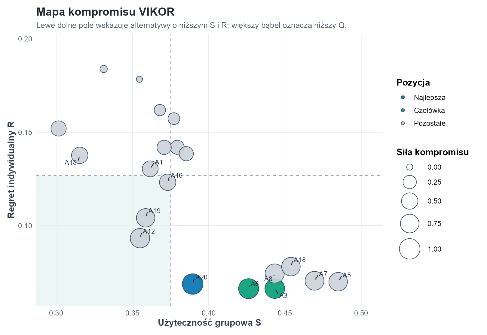
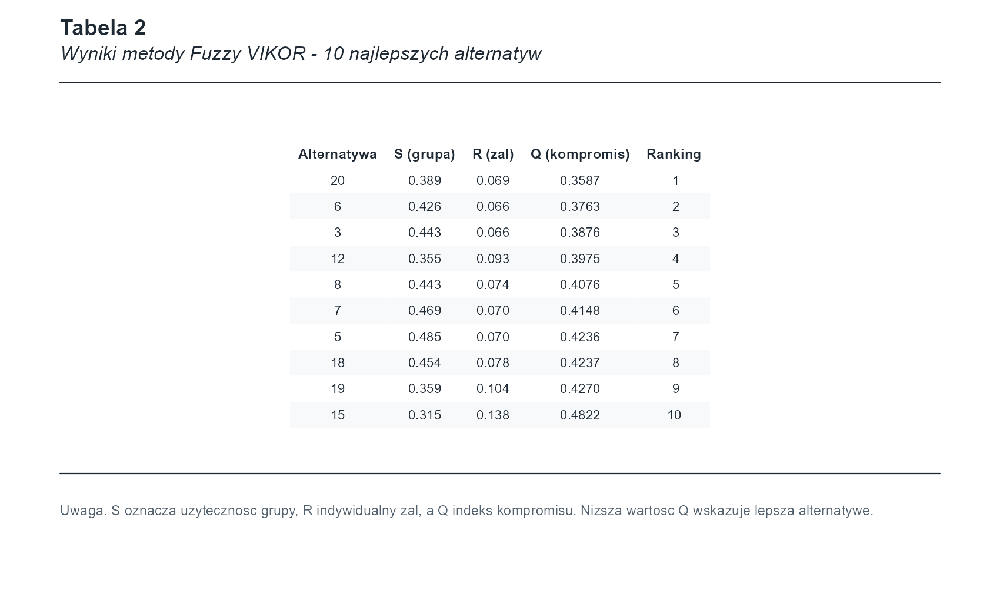

Pakiet R do oceny źródeł i artykułów
Które źródła są najbardziej clickbaitowe?
ClickbaitRankR zamienia oceny ekspertów w czytelny ranking. Pakiet pomaga porównać wiele artykułów lub źródeł naraz, nawet jeśli kryteria są różne: jedne warto maksymalizować, inne minimalizować.
Dane
30
alternatyw w demonstracji
Kryteria
9
obszarów oceny treści
Metoda główna
VIKOR
ranking kompromisowy
Jak działa paczka
Od ocen ekspertów do rankingu
1. Dane
Eksperci oceniają artykuły lub źródła według wielu cech.
2. Kryteria
Zmienne surowe są grupowane w kryteria, np. wiarygodność i manipulację.
3. TFN
Ocena jest zapisana jako przedział rozmyty, a nie jako jedna pewna liczba.
4. Wagi
CRITIC i Entropia liczą znaczenie kryteriów z samych danych.
5. Ranking
VIKOR wybiera alternatywy z najlepszym kompromisem.
Dane i procedura DGP
Przykładowe dane zostały wygenerowane procedurą DGP. Oznacza to, że znamy regułę tworzenia danych: część źródeł jest bardziej sensacyjna, eksperci różnią się surowością, a błędy mają cięższe ogony niż w prostym rozkładzie normalnym.
| Kryterium | Znaczenie proste | Typ |
|---|---|---|
| Wiarygodnosc | czy źródło wygląda rzetelnie | max |
| Koszt | koszt dostępu | min |
| Sensacyjnosc | emocjonalność i clickbait | min |
| Manipulacja | przekłamania faktów i obrazu | min |
TFN w prostym języku
Oceny eksperckie nie są idealnie dokładne. Dlatego pakiet zapisuje ocenę jako trójkę: dolna wartość, wartość środkowa i górna wartość. Potem wynik jest sprowadzany do jednej liczby wzorem:
Wagi obiektywne
Które kryteria najbardziej wpływają na wynik?
Wagi nie są ustawiane ręcznie. Entropia patrzy na zróżnicowanie informacji, a CRITIC dodatkowo sprawdza, czy kryterium wnosi coś innego niż pozostałe. Dzięki temu ranking jest bardziej obiektywny.
Metoda główna
Fuzzy VIKOR
VIKOR szuka najlepszego kompromisu. Dobra alternatywa powinna mieć niski wynik ogólnych strat S, niski największy pojedynczy żal R i niski indeks kompromisu Q.
Wykres kompromisu
Poniższy obraz pochodzi bezpośrednio z funkcji plot(wynik_vikor).
Lepsze alternatywy są bliżej dolnego obszaru i mają większe bąble.

Tabela APA dla VIKOR
Pakiet potrafi przygotować tabelę w stylu publikacyjnym. To jest wynik funkcji
tabela_apa(wynik_vikor), pokazany tutaj dla 10 najlepszych alternatyw.

Kontrola stabilności
Meta-ranking
Meta-ranking zbiera wyniki z TOPSIS, VIKOR i WASPAS. Jeżeli metody wskazują podobne alternatywy, interpretacja jest stabilniejsza. Jeżeli się różnią, warto opisać, dlaczego metody inaczej rozumieją kompromis.
| Alt. | TOPSIS | VIKOR | WASPAS | Meta Sum | Dominance |
|---|
Zgodność metod
Wysoka dodatnia korelacja oznacza, że dwie metody dają podobną kolejność alternatyw. Ujemna wartość pokazuje, że metoda patrzy na problem inaczej.
Odtworzenie wyników
Jak sprawdzić pakiet lokalnie
Recenzent może zainstalować pakiet, uruchomić analizę i porównać wyniki z dashboardem.
devtools::install_github("KrzyweOkulary/ClickbaitRankR")
library(ClickbaitRankR)
data("mcda_dane_surowe")
macierz_tfn <- przygotuj_dane_mcda(
dane = mcda_dane_surowe,
skladnia = skladnia_clickbait,
kolumna_alternatyw = "Alternatywa"
)
wynik_vikor <- rozmyty_vikor(
macierz_decyzyjna = macierz_tfn,
typy_kryteriow = typy_kryteriow,
metoda_wag = "critic"
)
plot(wynik_vikor)
tabela_apa(wynik_vikor)
Pełny skrypt testowy znajduje się w data-raw/sprawdz_dgp_i_funkcje.R.